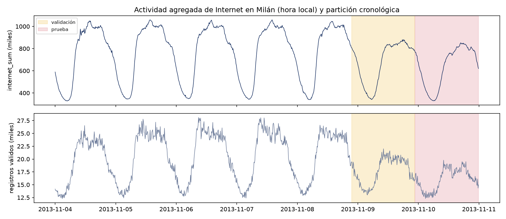
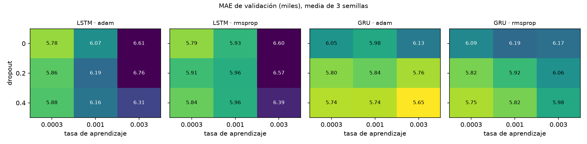
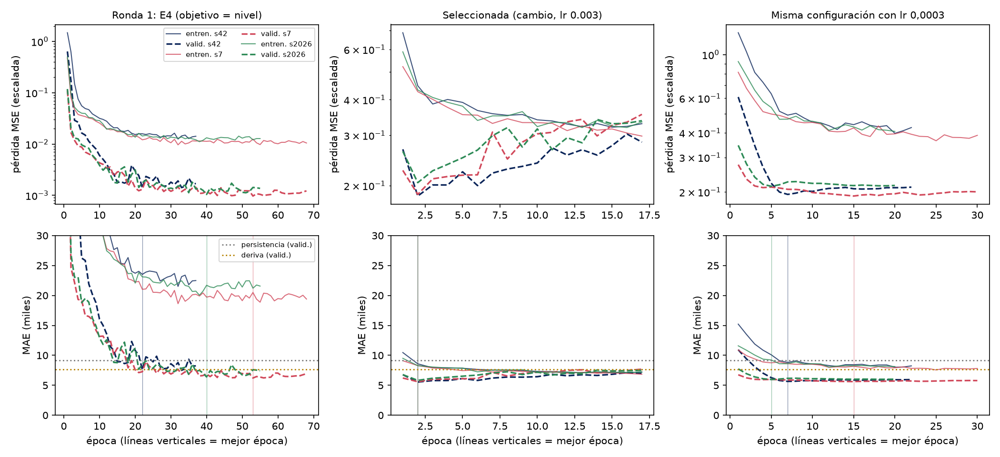
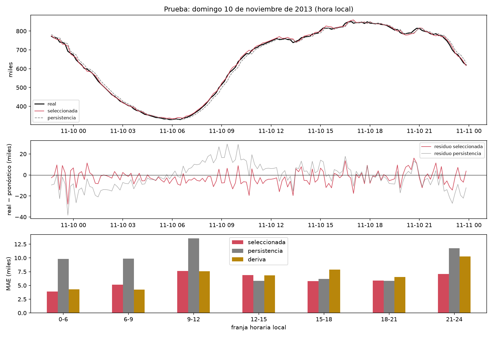

Código, notebook ejecutado, pesos y registro MLflow: github.com/dsiriarte/Tecnicas-Avanzadas-de-Modelado-en-IA/tree/main/Unidad 4 (notebook notebooks/U4_pronostico_internet_milan.ipynb).
Queremos pronosticar la actividad de Internet de Milán en el siguiente intervalo de 10 minutos. Usamos la primera semana del Telecom Italia Big Data Challenge (Barlacchi et al., 2015; licencia ODbL): 39.015.462 registros de 10.000 celdas, del 4 al 10 de noviembre de 2013. En cada marca de tiempo sumamos la columna internet de todas las celdas. El 49,7 % de los registros no tiene ese valor y no lo reemplazamos por cero. El resultado es una serie continua de 1.008 intervalos (internet_sum), que es un índice de actividad y no un volumen en bytes.
Partimos la serie en orden cronológico, 70/15/15, con los mismos cortes del avance (intervalos 705 y 856). Quedan 693 ventanas de entrenamiento (lunes a viernes), 151 de validación (sábado) y 152 de prueba (domingo). Los escaladores se ajustan solo con entrenamiento. Todas las decisiones se toman en validación, con la media de tres semillas (42, 7 y 2026) y enable_op_determinism.

StandardScaler ajustado en entrenamientoImplementamos el pipeline en TensorFlow/Keras 2.21. Cada entrada tiene forma (12, c): 12 pasos equivalen a 2 horas, tiempo suficiente para ver la pendiente de una subida o una bajada. Un assert comprueba que ninguna ventana de validación o prueba tenga su objetivo en otra partición y que la transformación inversa recupere la serie original. La tabla 1 resume y justifica cada capa.
| Capa | Configuración final | Justificación |
|---|---|---|
| Entrada | (12, 4) | Nivel escalado, cambio escalado y hora local en seno y coseno, para que 23:50 y 00:00 queden cerca. La hora solo ayuda cuando el objetivo es el cambio (sección 3). |
| GRU | 32 unidades, 3.648 parámetros | Resume la ventana en un estado oculto con compuertas de actualización y reinicio. Tiene 23 % menos parámetros que la LSTM equivalente (4.769) y le ganó en las cuatro combinaciones de la ronda 2. Con 693 ventanas, el modelo completo (3.681 parámetros) tiene unos 5 parámetros por ejemplo. |
| Dropout | p = 0,4 | Regulariza el estado final. En la búsqueda, el error bajó a medida que subimos el dropout (0: 6.117; 0,4: 5.937). |
| Dense | 1 neurona lineal | Salida de regresión sin límites, porque el cambio puede ser positivo o negativo. |
| Objetivo | yt − yt−1, escalado | La desviación del cambio es 15 veces menor que la del nivel (16.524 frente a 251.097). Si la red predice el nivel, tiene que acertar un valor cercano a 800 mil para estimar un cambio de unos 8 mil. Con el cambio como objetivo, la persistencia es el caso en que la red predice cero. |
| Entrenamiento | MSE, Adam (lr = 0,003), lote 32 | Hasta 150 épocas, con EarlyStopping (paciencia 15, recupera los mejores pesos) y ReduceLROnPlateau (factor 0,5, paciencia 6) sobre la pérdida de validación. Las 147 redes tuvieron este mismo presupuesto. |
Seguimos el enfoque científico de ajuste de Google Developers (s. f.). En cada ronda cambiamos pocos factores a la vez. Distinguimos dos tipos de hiperparámetros: los científicos, que son los que queremos comparar (la celda y el objetivo), y los de ruido (tasa de aprendizaje, dropout y optimizador), que ajustamos para cada celda antes de compararlas. Registramos las 150 corridas en MLflow, con parámetros, métricas, pérdidas por época y artefactos, y en salidas/experimentos.csv.
| Ronda y factor cambiado | Configuración | MAE val. | DE semillas | vs. persist. |
|---|---|---|---|---|
| Líneas base en validación: persistencia 9.147 · deriva 7.612 · Ridge (cambio, α = 100) 5.875 | ||||
| R1 · referencia del avance | E1 LSTM, Adam, lr 0,001, p 0,2 (nivel) | 10.703 | 1.682 | +17,0 % |
| R1 · solo lr | E2 lr 0,0005 | 12.194 | 1.209 | +33,3 % |
| R1 · solo dropout | E3 p 0,3 | 10.669 | 730 | +16,6 % |
| R1 · solo celda | E4 GRU | 6.727 | 740 | −26,5 % |
| R1 · solo optimizador | E5 RMSprop | 7.484 | 581 | −18,2 % |
| R2 · objetivo | GRU, objetivo = cambio, entrada = nivel | 6.366 | 51 | −30,4 % |
| R2 · objetivo y entradas | GRU, cambio, nivel + cambio + hora | 5.844 | 299 | −36,1 % |
| R2 · entradas sin cambiar objetivo | GRU, nivel, nivel + cambio + hora | 30.153 | 10.888 | +229,7 % |
| R3 · mejor LSTM de la malla | Adam, lr 0,0003, p 0 | 5.780 | 280 | −36,8 % |
| R3 · mejor GRU (seleccionada) | Adam, lr 0,003, p 0,4 | 5.653 | 148 | −38,2 % |
Tabla 2. MAE de validación, media de 3 semillas. R2 es un factorial 2 × 2 × 2 (celda × objetivo × entrada) con los valores por defecto. R3 es una malla completa de 36 configuraciones: lr {0,0003; 0,001; 0,003} × dropout {0; 0,2; 0,4} × {Adam, RMSprop} × {LSTM, GRU}.

Ronda 1. Con el objetivo de nivel, el resultado depende mucho de la celda y del optimizador, y tres de las cinco configuraciones del avance quedan peor que la persistencia. Bajar la tasa de aprendizaje empeora el error (E2: 12.194 frente a 10.703), aunque la red entrena más épocas (42 frente a 33).
Ronda 2. Al predecir el cambio, todas las celdas mejoran y la desviación entre semillas baja de 740-1.682 a 51-120. Las variables de hora solo sirven con este objetivo. Si la red predice el nivel con esas variables, aprende el perfil de lunes a viernes y falla el sábado (MAE 30.153).
Ronda 3. La tasa de aprendizaje es el factor con más efecto: el MAE medio es 5.861 con 0,0003 y 6.249 con 0,003. El error baja a medida que aumenta el dropout, y el optimizador casi no cambia el resultado (Adam 6.018; RMSprop 6.043). Las cinco mejores configuraciones están dentro de una desviación estándar entre semillas (5.653-5.760), así que la conclusión firme es la combinación GRU, dropout 0,4 y objetivo de cambio, más que un valor exacto de lr. La regla de selección, fijada antes de entrenar, fue el menor MAE medio de validación, y eligió lr = 0,003. Promediar las tres semillas bajó el MAE de validación de 5.653 a 5.599; por eso el modelo final es ese promedio.

Objetivo de nivel (E4). La pérdida de entrenamiento queda unas 12 veces por encima de la de validación (cociente 0,08-0,09). No se trata de subajuste: el dropout altera un estado que debe representar un nivel cercano a 800 mil, y ese ruido infla la pérdida de entrenamiento. La mejor época cambia mucho con la semilla (entre 22 y 53) y la tasa de aprendizaje termina entre 1,6e-05 y 1,3e-04 después de varias reducciones. Es un entrenamiento lento y poco estable.
Objetivo de cambio (modelo seleccionado). La pérdida de validación llega a su mínimo en la época 2 con las tres semillas. Después sigue bajando la de entrenamiento y sube la de validación, que es el comienzo del sobreajuste. EarlyStopping recupera los pesos de la época 2 y detiene el entrenamiento en la 17. La pérdida de validación queda por debajo de la de entrenamiento (cociente 0,41-0,47) por dos razones. La primera es que el dropout de 0,4 solo actúa durante el entrenamiento. La segunda es que el sábado tiene cambios más pequeños: la desviación es 11.433 frente a 16.505 y la varianza queda en el 48 % de la de entrenamiento. Si medimos sin dropout con los pesos recuperados, el R² del cambio es 0,64 en entrenamiento y 0,60 en validación. En la época elegida no hay sobreajuste. E4, en cambio, solo explica el 30 % y el 45 % de la varianza del cambio.
La misma red con lr = 0,0003. Converge más despacio (mínimo entre las épocas 5 y 15), con curvas más suaves, y llega a un MAE casi igual (5.744). La tasa alta llega antes al mínimo; dentro de la variación entre semillas, las dos opciones son equivalentes.
Evaluamos la prueba una sola vez, con la configuración ya elegida y con las mismas 152 ventanas para todos los modelos. El avance ya había usado la prueba con E5 (MAE 9.906, peor que la persistencia). Para no ajustar el diseño a esa partición, en esta versión todas las decisiones se tomaron en validación.
Para comparar la GRU con cada línea base usamos la diferencia del error absoluto en cada ventana, dt = |ered,t| − |ebase,t|, cuyo promedio es la diferencia de MAE. Como los errores de una serie de tiempo están autocorrelacionados, calculamos su IC 95 % con bootstrap de bloques móviles (bloques de 12 pasos, 5.000 réplicas). Además aplicamos la prueba de Diebold y Mariano (1995), DM = d̄ / √(V̂NW/n), con varianza de Newey-West de 5 rezagos y la corrección de Harvey, Leybourne y Newbold.
| Modelo (prueba, domingo) | MAE | RMSE | MAPE | vs. persist. |
|---|---|---|---|---|
| Persistencia (línea base) | 9.230 | 11.584 | 1,6 % | — |
| Deriva | 6.687 | 8.944 | 1,0 % | −27,5 % |
| Media de ventana | 48.978 | 60.887 | 8,7 % | +430,6 % |
| Ingenuo diario | 44.226 | 58.200 | 7,5 % | +379,2 % |
| Ridge (cambio) | 6.687 | 8.306 | 1,1 % | −27,6 % |
| Ronda 1: E4 GRU (nivel) | 7.370 | 10.194 | 1,1 % | −20,2 % |
| Mejor LSTM (R3) | 6.022 | 7.667 | 1,0 % | −34,8 % |
| GRU seleccionada | 5.835 | 7.364 | 1,0 % | −36,8 % |
| GRU frente a | ΔMAE | IC 95 % | p (DM) | gana |
|---|---|---|---|---|
| Persistencia | −3.395 | [−5.503; −902] | < 0,001 | 69 % |
| Ridge (cambio) | −852 | [−1.453; −508] | < 0,001 | 70 % |
| Deriva | −853 | [−1.687; +205] | 0,06 | 52 % |
| E4 de la ronda 1 | −1.535 | [−3.233; +40] | 0,05 | 55 % |
«Gana» es el porcentaje de las 152 ventanas en que la GRU tiene menor error absoluto. Por separado, las tres semillas dan MAE de 5.560, 5.645 y 6.420 (5.875 ± 474); el promedio de las tres es mejor que la media individual.
Frente a la persistencia, que es la línea base del avance, la GRU reduce el MAE en 36,8 %, el RMSE en 36,4 % y el MAPE de 1,6 % a 1,0 %, y el intervalo de confianza queda lejos de cero. Frente a Ridge, que usa las mismas entradas y el mismo objetivo, la ventaja de 12,7 % también es significativa. Esto indica que la red aporta algo más que la nueva formulación del problema.
Frente a la deriva, la diferencia es de 853 (12,8 %), pero el intervalo incluye el cero. Con un solo día de prueba no podemos afirmar que la red supere a una regla sin entrenamiento que repite el último cambio.
El MAE de validación (5.599) y el de prueba (5.835) difieren en 4 %, así que la selección no quedó ajustada a la validación. En la ronda 1, E4 ya supera a la persistencia en prueba (7.370), algo que E5 no logró en el avance. Parte de la mejora viene entonces del protocolo común (más paciencia, ventanas mezcladas en cada época y tres semillas), y no solo del cambio de objetivo.

| Tercil del cambio real |yt − yt−1| | GRU | Persistencia | Deriva | Lectura |
|---|---|---|---|---|
| Estable (tercil bajo) | 5.213 | 2.514 | 5.674 | Si la serie casi no cambia, la persistencia acierta; la red predice un cambio que no ocurre. |
| Medio | 5.180 | 7.935 | 6.258 | La red gana a las dos. |
| Rampa (tercil alto) | 7.098 | 17.215 | 8.121 | La red reduce el error en 59 % frente a la persistencia; aquí está casi toda la mejora. |
La red gana en la madrugada (0-6 h: 3.883 frente a 9.815) y en la caída de la noche (21-24 h: 7.058 frente a 11.784), cuando la actividad sube o baja de forma sostenida. Pierde entre las 12 y las 15 h (6.899 frente a 5.841), cuando la actividad del domingo se mantiene casi plana.
El residuo medio es −2.633, es decir, la red sobrestima la actividad del domingo. Entrenó solo con días laborales y el nivel medio de la prueba (642 mil) es 17 % más bajo que el de entrenamiento (771 mil). Cuatro de los cinco errores más grandes son sobrestimaciones; el mayor (−27.766) ocurre el sábado a las 23:40, durante la caída nocturna.
La prueba de Ljung-Box no rechaza la independencia de los residuos (p = 0,79, 0,28 y 0,21 en los rezagos 1, 6 y 12): la red aprovecha la estructura de corto plazo que hay en la ventana. El percentil 95 del error baja de 21.839 con la persistencia a 13.872, y la correlación entre el error absoluto y la cobertura es baja (0,19).
Costos. Las 147 redes de la búsqueda se entrenaron en 4,4 minutos de CPU (1,6 s por red en la ronda 3). La inferencia tarda 0,18 ms por ventana y por modelo, y el modelo final usa tres. Son costos bajos, aunque no nulos: la persistencia y la deriva no necesitan entrenamiento, datos históricos ni mantenimiento.
Limitaciones. (1) Solo hay una semana de datos: entrenamos con días laborales y evaluamos un sábado y un domingo. Esto explica el sesgo, pero no permite medir la variación entre semanas. (2) La prueba es un único bloque de 152 ventanas, de modo que el intervalo de confianza refleja la incertidumbre dentro de ese día y no entre días. (3) El avance ya había usado la prueba; ninguna decisión de esta versión la usó, pero ya no es una partición sin ver. (4) El índice depende de la cobertura (r = 0,88) y no mide tráfico absoluto. (5) Solo evaluamos el horizonte de 10 minutos.
Oportunidades de mejora. (1) Validar con origen móvil (TimeSeriesSplit; Scikit-learn Developers, s. f.) sobre varias semanas del mismo conjunto de datos, que cubre noviembre y diciembre de 2013, para estimar la variación entre días. (2) Agregar el día de la semana y la cobertura como entradas, para corregir el sesgo del fin de semana. (3) Combinar la red con la persistencia según el régimen, porque cada una gana en un tercil distinto. (4) Pronosticar varios pasos adelante y por celda, donde la persistencia pierde más.
Barlacchi, G., De Nadai, M., Larcher, R., Casella, A., Chitic, C., Torrisi, G., Antonelli, F., Vespignani, A., Pentland, A., & Lepri, B. (2015). A multi-source dataset of urban life in the city of Milan and the Province of Trentino. Scientific Data, 2, 150055. https://doi.org/10.1038/sdata.2015.55
Diebold, F. X., & Mariano, R. S. (1995). Comparing predictive accuracy. Journal of Business & Economic Statistics, 13(3), 253-263. https://doi.org/10.1080/07350015.1995.10524599
Goodfellow, I., Bengio, Y., & Courville, A. (2016). Deep learning. MIT Press. https://www.deeplearningbook.org/
Google Developers. (s. f.). A scientific approach to improving model performance. https://developers.google.com/machine-learning/guides/deep-learning-tuning-playbook/scientific
MLflow Project. (s. f.). MLflow Tracking. https://mlflow.org/docs/latest/ml/tracking/
Scikit-learn Developers. (s. f.). Cross-validation: evaluating estimator performance. https://scikit-learn.org/stable/modules/cross_validation.html